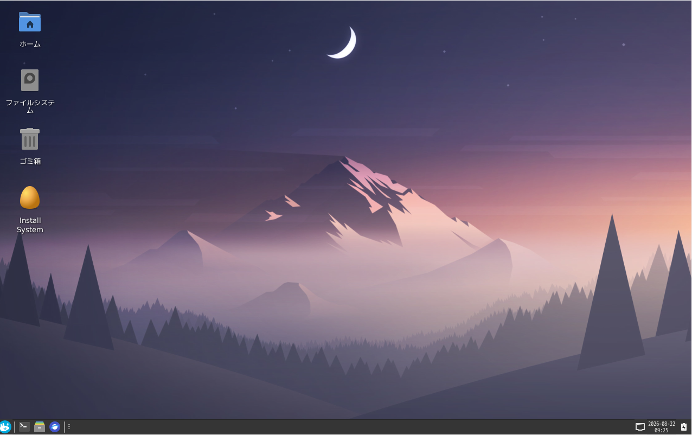
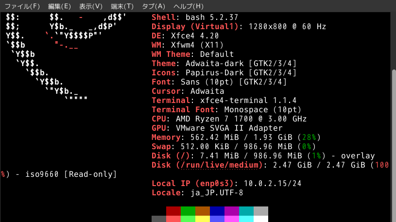

NagisinnraLinux
13歳が開発した、日常使いのためのDebianベース超軽量Linux
Version: v1.0.2 stable
Released: 2026.08
Architecture: x86_64
主な特徴 (Features)
超軽量設計

起動直後のRAM使用量: 約476MB
ディスク使用量: 約2.45GB
快適な日本語環境

fcitx5 + mozc を初期状態で標準搭載。
メモリ最適化

zram によるメモリ圧縮技術を最適化構成。
技術情報 (Technical Details)
- Base Distribution: Debian GNU/Linux
- Memory Optimization: zram
- Input Framework: fcitx5
- Input Method: mozc
各種リンク (Links)
- Downloads: NagisinnraLinux v1.0.2 stable
- NagisinnraLinux Mist Edition: Mist Edition ISO (2026-08-23)
- Official Discord: Join the Community
- GitHub Repository: nagisinnra on GitHub